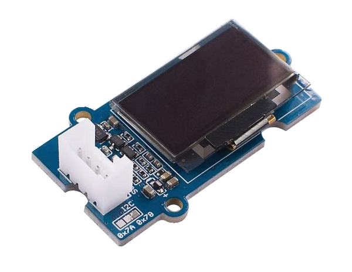
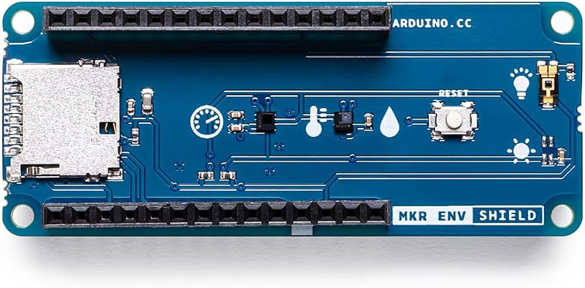
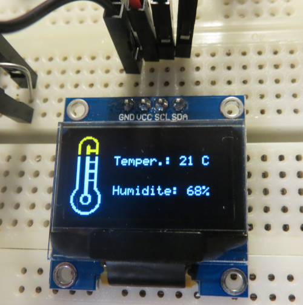

DU TSS (Technicien Supérieur de Santé)
Une formation orientée vers le domaine de la santé, alliant compétences techniques et projets collaboratifs interdisciplinaires.
Outils & Coopération
- Conception 3D : Apprentissage et modélisation de pièces et de structures sur le logiciel industriel CATIA.
- Projets Inter-BUT : Travail en synergie avec des étudiants d'autres spécialités pour croiser les compétences et répondre à des problématiques médicales réelles.
Focus Projet : SafeBaby
Le concept SafeBaby
SafeBaby est un boîtier intelligent actuellement en cours de développement, conçu pour surveiller l’environnement direct d’un nourrisson (température, humidité, qualité de l'air, etc.) afin de garantir sa sécurité et sa santé.


Composant du Projet

Arduino MKR 1010 Wifi

Ecran Oled Grov

Arduino MKR ENV Shield
Galerie du Projet

Premier test du shield température